SMART IOT SYSTEMS & CLOUD ARCHITECTURE
Five hands-on tasks that build on each other: a local ESP32 web server, cloud control through Adafruit IO and MQTT, Google Assistant voice automation with IFTTT, and finally a Firebase smart-lighting system with live monitoring, automatic control, historical logging and CSV export.
ESP32 Web Server & HTML LED Control
The ESP32 hosts a web page on my local Wi-Fi network. Clicking its buttons sends HTTP requests that switch the onboard LED on GPIO 2.
1. Objective & Problem
Objective: control a physical output (the ESP32's onboard LED) from any browser on the same Wi-Fi network, with no app or cloud service in between.
Problem being addressed: embedded devices normally have no screen or input. Running a small web server on the ESP32 gives it a user interface that any phone or laptop can open, which is the first step towards remotely controlled IoT devices.
2. Basic Concept of an ESP32 Web Server
The ESP32 has built-in Wi-Fi and enough memory to run an HTTP server. Using the WebServer library it listens on port 80, and each URL path (a route) is mapped to a C++ handler function. When a browser requests a route, the handler runs, can change a GPIO pin, and sends back an HTML response. The ESP32 is therefore both the hardware controller and the website.
3. How the ESP32 and Browser Communicate over Wi-Fi
- The ESP32 joins the Wi-Fi network in station mode and receives a local IP address from the router (printed in the Serial Monitor).
- A phone or laptop on the same network opens
http://<ESP32-IP>/. This is an HTTP GET request over TCP port 80. - The ESP32's
/handler replies with the control page. - Clicking a button requests
/onor/off. The handler sets GPIO 2 and redirects (HTTP 303) back to/.
Browser (phone / laptop) ESP32 (192.168.x.x : 80)
│ GET / │
│ ─────────────────────────────────────► │ handleRoot() → send HTML page
│ ◄───────────────────────────────────── │
│ GET /on (button click) │
│ ─────────────────────────────────────► │ handleOn() → digitalWrite(2, HIGH)
│ ◄──────────── 303 redirect to / ────── │
│ GET /off │
│ ─────────────────────────────────────► │ handleOff() → digitalWrite(2, LOW)
└──────────── same Wi-Fi router / LAN ───┘
4. Hardware Components
| Component | Purpose |
|---|---|
| ESP32 Dev Module | Wi-Fi microcontroller running the web server |
| Onboard LED (GPIO 2) | Output being controlled |
| Micro-USB cable | Power, programming and Serial Monitor |
| Laptop / phone | Browser client on the same Wi-Fi network |
| Wi-Fi router | Local network connecting ESP32 and browser |
5. Circuit / Wiring Diagram & Pin Connections
No external wiring is needed. The LED used is the one already soldered on the ESP32 board and internally connected to GPIO 2 through a current-limiting resistor.
Laptop USB ───────► ESP32 micro-USB (5 V power + serial) ┌──────────── ESP32 Dev Module ────────────┐ │ │ │ GPIO 2 ──[ R ]──►|── GND │ ← onboard blue LED │ │ │ Wi-Fi radio ))) router ))) browser │ └──────────────────────────────────────────┘
| ESP32 Pin | Connected to | Mode |
|---|---|---|
| GPIO 2 | Onboard LED (internal) | OUTPUT — HIGH = ON, LOW = OFF |
| USB (5 V / GND) | Laptop | Power & serial at 115200 baud |
6. HTML Interface & How It Sends Commands
The page is generated inside handleRoot() as a string and contains two styled links, TURN LED ON (href="/on") and TURN LED OFF (href="/off"). Clicking one makes the browser issue a GET request to that path. The ESP32 matches the path with server.on(), changes the pin, then redirects back to the page so the user can keep clicking.
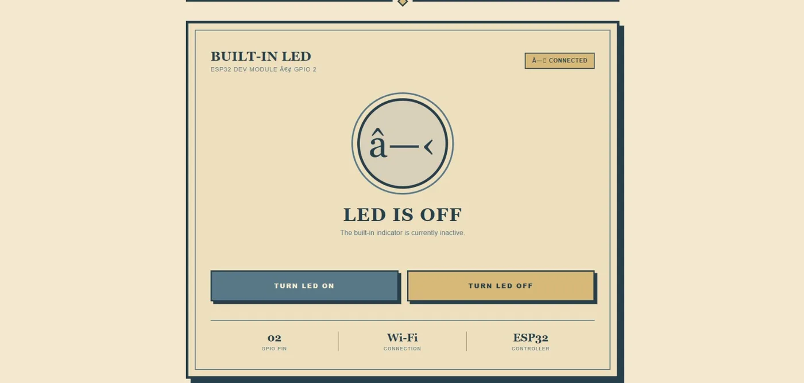
7. Complete Source Code
Key sections: WiFi.begin() connects and prints the IP; server.on("/on", handleOn) maps routes to handlers; digitalWrite(LED_PIN, HIGH/LOW) drives the LED; server.handleClient() in loop() processes incoming requests.
Show full source — task1_esp32_webserver.ino
/*
* TASK 01: ESP32 Web Server & Built-in LED Control
* Board: ESP32 Dev Module
* GPIO: Pin 2 (Onboard LED)
* Sanitized for public release - Replace WiFi credentials before upload.
*/
#include <WiFi.h>
#include <WebServer.h>
// Replace with your local Wi-Fi credentials
const char* ssid = "YOUR_WIFI_SSID_HERE";
const char* password = "YOUR_WIFI_PASSWORD_HERE";
WebServer server(80);
const int LED_PIN = 2;
void handleRoot() {
String html = "<!DOCTYPE html><html><head><meta name='viewport' content='width=device-width, initial-scale=1'>";
html += "<title>ESP32 LED Control</title>";
html += "<style>body{font-family:Arial;text-align:center;margin-top:50px;}";
html += ".btn{display:inline-block;padding:15px 30px;font-size:18px;color:white;border:none;border-radius:8px;text-decoration:none;margin:10px;}";
html += ".on{background-color:#4CAF50;} .off{background-color:#f44336;}</style></head><body>";
html += "<h2>ESP32 Web Server LED Control</h2>";
html += "<a href='/on' class='btn on'>TURN LED ON</a>";
html += "<a href='/off' class='btn off'>TURN LED OFF</a>";
html += "</body></html>";
server.send(200, "text/html", html);
}
void handleOn() {
digitalWrite(LED_PIN, HIGH);
server.sendHeader("Location", "/");
server.send(303);
}
void handleOff() {
digitalWrite(LED_PIN, LOW);
server.sendHeader("Location", "/");
server.send(303);
}
void setup() {
Serial.begin(115200);
pinMode(LED_PIN, OUTPUT);
digitalWrite(LED_PIN, LOW);
Serial.println("Connecting to Wi-Fi...");
WiFi.begin(ssid, password);
while (WiFi.status() != WL_CONNECTED) {
delay(500);
Serial.print(".");
}
Serial.println("");
Serial.println("Wi-Fi connected.");
Serial.print("IP address: ");
Serial.println(WiFi.localIP());
server.on("/", handleRoot);
server.on("/on", handleOn);
server.on("/off", handleOff);
server.begin();
Serial.println("HTTP server started");
}
void loop() {
server.handleClient();
}
8. Photos, Screenshots & Demo Video
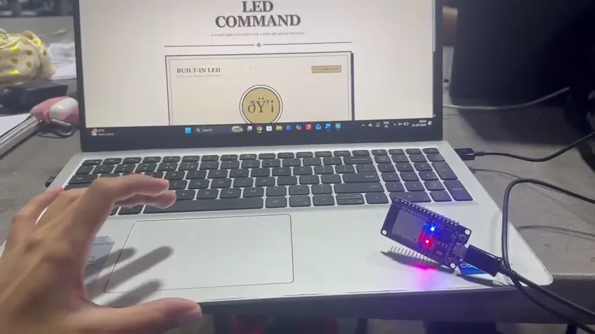
9. Problems Encountered & Solutions
Problem: the ESP32 would not join the Wi-Fi network. The first sketch was connected to my phone hotspot, and the Serial Monitor just printed dots forever with no error. Solution: I added a limit to the connection loop so it stops after a number of attempts and prints WiFi.status(). That showed "Wi-Fi connection FAILED, status code 6" (disconnected) instead of hanging. I then checked the SSID and password and moved the board to the lab Wi-Fi network, after which it connected and printed its IP address.
Problem: the control page only opened when my laptop was on the same Wi-Fi network as the ESP32. From any other network the IP address did not respond. Solution: for Task 1 I kept both devices on the same network. This limitation is the reason Task 2 moves control to the cloud with MQTT.
10. Reflection
Task 1 showed me how a web interface can drive physical hardware. I learned the basics of client–server communication on an embedded device: the ESP32 gets an IP address, listens for HTTP requests, and maps each URL to an action. Its main limitation, that the browser must be on the same network and know the ESP32's IP, is exactly what Task 2 solves with the cloud.
11. Files in Repository
Firmware: downloads/task1_esp32_webserver.ino ↗
Adafruit IO Dashboard & MQTT
A toggle on an Adafruit IO cloud dashboard switches a bulb through a relay on ESP32 GPIO 23, using MQTT publish/subscribe instead of a direct local connection.
1. Purpose of Adafruit IO in an IoT System
Adafruit IO is a cloud IoT platform. It provides feeds (named data channels that store values), dashboards (web UIs with toggles, gauges and charts bound to feeds) and a hosted MQTT broker. In this task it removes the Task 1 limitation: the ESP32 and the user no longer need to be on the same network, because both talk to the cloud.
2. Basic Concept of MQTT
MQTT (Message Queuing Telemetry Transport) is a lightweight publish/subscribe protocol over TCP, designed for low-power devices and unreliable networks. Clients never talk to each other directly. They publish messages to a topic on a central broker, and the broker forwards each message to every client subscribed to that topic. A persistent connection with keep-alive pings means the device receives commands instantly without polling.
3. Publisher, Subscriber, Broker & Topic/Feed
| MQTT role | In this project |
|---|---|
| Publisher | Adafruit IO dashboard toggle "Relay Control" — publishes 1 (ON) or 0 (OFF) |
| Broker | Adafruit IO MQTT broker, io.adafruit.com:1883 |
| Subscriber | ESP32, subscribed to the relay feed |
| Topic / Feed | <username>/feeds/relay — the named channel that carries the bulb command and keeps its history |
The feed is Adafruit IO's name for an MQTT topic. Its job is to decouple the two sides: the dashboard only knows it writes to relay, and the ESP32 only knows it listens to relay.
4. Hardware & Software Used
| Item | Role |
|---|---|
| ESP32 Dev Module | Wi-Fi controller and MQTT subscriber |
| 5 V relay module | Switches the bulb circuit, driven by GPIO 23 |
| Bulb + holder | Physical load switched by the relay |
| Arduino IDE + ESP32 core | Programming the board |
WiFi.h, Adafruit_MQTT.h, Adafruit_MQTT_Client.h | Network connection and MQTT client |
Adafruit IO (account poornaa2006) | Cloud broker, feed and dashboard |
5. Adafruit IO Account, Feed & Dashboard Configuration
- Created an Adafruit IO account and copied the username and AIO Key (used as the MQTT password).
- Created a feed named
relay. - Created a dashboard named ESP32 Smart Bulb.
- Added a Toggle block titled "Relay Control", linked to the
relayfeed, with Button On textON→ value1and Button Off textOFF→ value0. - Put the Wi-Fi credentials, username and AIO Key into the sketch, flashed it and confirmed "Adafruit IO connected!" in the Serial Monitor.
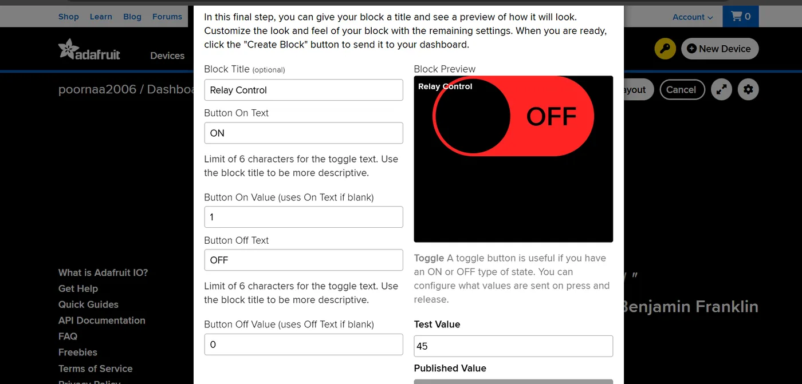
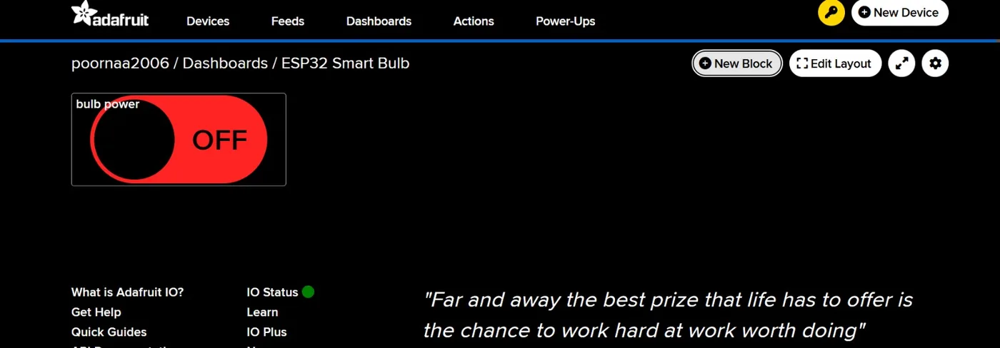
6. Communication Flow & Topic Structure
Adafruit IO dashboard (toggle)
│ publish "1" / "0"
▼
Adafruit IO MQTT broker (io.adafruit.com : 1883)
│ topic: poornaa2006/feeds/relay
▼
ESP32 MQTT subscriber — mqtt.readSubscription()
│ "1"/"ON" → GPIO 23 HIGH "0"/"OFF" → GPIO 23 LOW
▼
5 V relay module ──► bulb ON / OFF
Wiring
ESP32 GPIO 23 ───► Relay IN ESP32 GND ───► Relay GND ESP32 VIN(5V) ───► Relay VCC Relay COM ───► supply live Relay NO ───► bulb live terminal (bulb neutral → supply neutral)
7. Complete Source Code & Important Sections
- Client setup:
Adafruit_MQTT_Client mqtt(&client, AIO_SERVER, 1883, AIO_USERNAME, AIO_KEY)creates the MQTT connection over aWiFiClient. - Subscription:
Adafruit_MQTT_Subscribe relayFeed(&mqtt, AIO_USERNAME "/feeds/relay")plusmqtt.subscribe(&relayFeed)insetup(). - Reconnect:
MQTT_connect()runs at the top of every loop. If the broker connection dropped it reconnects, and on failure it prints the error and retries after 5 s. - Command handling:
mqtt.readSubscription(1000)waits up to 1 s for a message. The payload is trimmed and compared:"1"/"ON"sets GPIO 23 HIGH,"0"/"OFF"sets it LOW. Accepting both forms is what lets Task 3 reuse this firmware.
Show full source — task2_3_esp32_mqtt.ino
/*
* TASK 02 & TASK 03: ESP32 Adafruit IO MQTT Relay Control
* Shared firmware for Task 2 (Adafruit IO dashboard) and Task 3 (IFTTT voice control)
* Board: ESP32 Dev Module Relay: GPIO 23 Feed: <username>/feeds/relay
* This is the firmware that ran on the board. Credentials have been
* replaced with placeholders for public release - fill them in before upload.
*/
#include <WiFi.h>
#include "Adafruit_MQTT.h"
#include "Adafruit_MQTT_Client.h"
// =================================================
// Wi-Fi
// =================================================
#define WIFI_SSID "YOUR_WIFI_SSID_HERE"
#define WIFI_PASSWORD "YOUR_WIFI_PASSWORD_HERE"
// =================================================
// Adafruit IO
// =================================================
#define AIO_SERVER "io.adafruit.com"
#define AIO_SERVERPORT 1883
#define AIO_USERNAME "YOUR_ADAFRUIT_USERNAME_HERE"
#define AIO_KEY "YOUR_ADAFRUIT_AIO_KEY_HERE"
// =================================================
// Relay
// =================================================
#define RELAY_PIN 23
// =================================================
// Wi-Fi client
// =================================================
WiFiClient client;
// =================================================
// MQTT client
// =================================================
Adafruit_MQTT_Client mqtt(
&client,
AIO_SERVER,
AIO_SERVERPORT,
AIO_USERNAME,
AIO_KEY
);
// =================================================
// Relay feed
// =================================================
Adafruit_MQTT_Subscribe relayFeed =
Adafruit_MQTT_Subscribe(
&mqtt,
AIO_USERNAME "/feeds/relay"
);
// =================================================
// SETUP
// =================================================
void setup() {
Serial.begin(115200);
delay(1000);
Serial.println();
Serial.println("================================");
Serial.println("ESP32 SMART BULB");
Serial.println("================================");
// -------------------------------------------------
// Relay
// -------------------------------------------------
pinMode(RELAY_PIN, OUTPUT);
// LOW = OFF initially (this relay module switches ON with HIGH)
digitalWrite(RELAY_PIN, LOW);
Serial.println("Relay initialized OFF");
// -------------------------------------------------
// Wi-Fi
// -------------------------------------------------
Serial.print("Connecting to Wi-Fi: ");
Serial.println(WIFI_SSID);
WiFi.begin(WIFI_SSID, WIFI_PASSWORD);
while (WiFi.status() != WL_CONNECTED) {
delay(500);
Serial.print(".");
}
Serial.println();
Serial.println("Wi-Fi connected!");
Serial.print("IP Address: ");
Serial.println(WiFi.localIP());
// -------------------------------------------------
// Subscribe to feed
// -------------------------------------------------
mqtt.subscribe(&relayFeed);
Serial.println("Subscribed to:");
Serial.println(AIO_USERNAME "/feeds/relay");
}
// =================================================
// MQTT CONNECTION
// =================================================
bool MQTT_connect() {
if (mqtt.connected()) {
return true;
}
Serial.println();
Serial.println("Connecting to Adafruit IO...");
int8_t ret = mqtt.connect();
if (ret == 0) {
Serial.println("Adafruit IO connected!");
return true;
}
Serial.print("MQTT connection failed: ");
Serial.println(mqtt.connectErrorString(ret));
mqtt.disconnect();
return false;
}
// =================================================
// MAIN LOOP
// =================================================
void loop() {
if (!MQTT_connect()) {
delay(5000);
return;
}
Adafruit_MQTT_Subscribe *subscription;
subscription = mqtt.readSubscription(1000);
if (subscription == &relayFeed) {
String command =
(char *)relayFeed.lastread;
command.trim();
Serial.println();
Serial.println("================================");
Serial.print("MQTT MESSAGE: ");
Serial.println(command);
// -----------------------------------------------
// ON
// -----------------------------------------------
if (command == "1" || command == "ON") {
digitalWrite(RELAY_PIN, HIGH);
Serial.println("RELAY: ON");
Serial.println("BULB: ON");
}
// -----------------------------------------------
// OFF
// -----------------------------------------------
else if (command == "0" || command == "OFF") {
digitalWrite(RELAY_PIN, LOW);
Serial.println("RELAY: OFF");
Serial.println("BULB: OFF");
}
else {
Serial.print("UNKNOWN VALUE: ");
Serial.println(command);
}
Serial.println("================================");
}
}
8. Hardware Photos & Working Demonstration
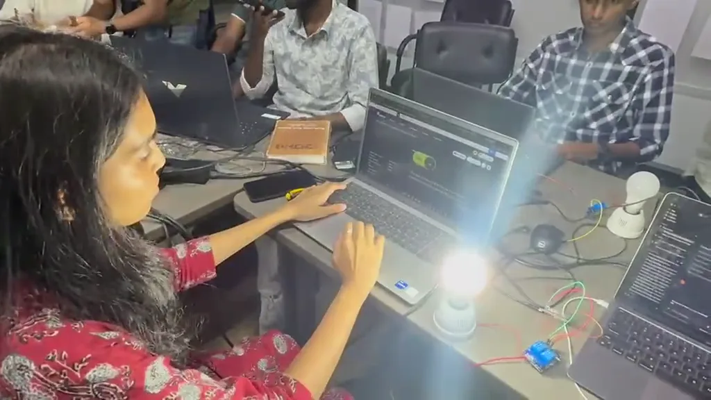
9. Problems Encountered & Solutions
Problem: the MQTT connection occasionally dropped during idle periods, so dashboard clicks stopped reaching the ESP32.
Solution: call mqtt.ping() every loop to keep the session alive, and call MQTT_connect() at the start of every loop so the ESP32 reconnects automatically.
10. Reflection
Task 2 taught me why MQTT suits IoT. In Task 1 the browser had to know the ESP32's local address. With MQTT, the ESP32 and the dashboard communicate through a broker and a feed, from anywhere with internet access. I learned the roles of publisher, subscriber, broker and feed, and saw a cloud message turn into a physical relay action.
11. Files in Repository
Firmware (shared with Task 3): downloads/task2_3_esp32_mqtt.ino ↗
IFTTT + Adafruit IO IoT Automation
Saying "Okay Google, activate bulb ON" switches the real bulb. IFTTT writes to the same Adafruit IO feed from Task 2, so the ESP32 firmware did not change.
1. Objective of the Automation
Control the Task 2 bulb with Google Assistant voice commands instead of clicking a dashboard, without modifying or re-flashing the ESP32.
2. Basic Concept of IoT Automation
IoT automation means devices act in response to events (a voice command, a time, a sensor value, a message) without someone operating a control panel each time. Usually a cloud service watches for the event and sends the command to the device on the user's behalf.
3. What IFTTT Is & the Trigger → Action Concept
IFTTT ("If This Then That") is a cloud automation service that connects hundreds of apps and devices through applets. It is used here because it already integrates with both Google Assistant and Adafruit IO, so no server code was needed.
Every applet has one trigger (the "If This" event from one service) and one or more actions (the "Then That" step performed in another service). When IFTTT detects the trigger, it runs the action automatically.
IF THIS ── Google Assistant hears "Okay Google, activate bulb ON" │ ▼ THEN THAT ── Adafruit IO: send data "ON" to the relay feed
4. Role of Adafruit IO
Adafruit IO stays the single control channel. IFTTT writes a value into the relay feed through Adafruit IO's API, and Adafruit IO's MQTT broker immediately pushes that new value to the ESP32, which is still subscribed from Task 2. The dashboard toggle and the voice command therefore control the bulb through the same feed.
5. Hardware & Software Used
| Item | Role |
|---|---|
| ESP32 + relay + bulb | Same hardware and wiring as Task 2 (relay on GPIO 23) |
| Task 2 MQTT firmware | Unchanged: subscribes to the relay feed |
| Adafruit IO | Feed storage and MQTT broker |
| IFTTT | Cloud automation linking the trigger to the action |
| Google Assistant (smartphone) | Voice trigger source |
6. IFTTT Applets — Trigger & Action
| Applet | Trigger (If This) | Action (Then That) |
|---|---|---|
| Bulb ON | Google Assistant: "Okay Google, activate bulb ON" | Adafruit IO → Send data to relay feed: ON |
| Bulb OFF | Google Assistant: "Okay Google, activate bulb OFF" | Adafruit IO → Send data to relay feed: OFF |
Configuration steps
- Connected my IFTTT account to the Google Assistant and Adafruit IO services.
- Created the ON applet: Google Assistant trigger phrase → Adafruit IO "Send data to feed" action on
relaywith valueON. - Created the matching OFF applet with value
OFF. - Spoke each command on my phone and checked the feed value and the bulb.
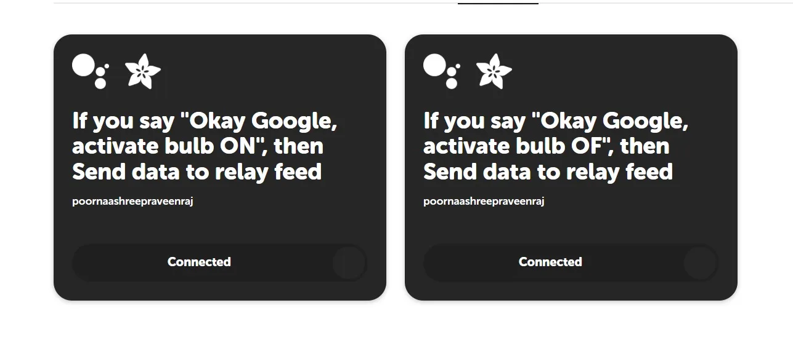
7. How the Trigger Reaches the IoT System
Voice: "Okay Google, activate bulb ON"
│ (phone → Google Assistant cloud)
▼
IFTTT applet trigger fires
│ HTTPS → Adafruit IO API (send data "ON")
▼
Adafruit IO relay feed updated
│ MQTT push to subscribers (io.adafruit.com:1883)
▼
ESP32 receives "ON" ──► GPIO 23 HIGH ──► relay ──► bulb ON
8. ESP32 Source Code
Task 3 uses exactly the Task 2 firmware (see Task 2, section 7). It already accepts "ON"/"OFF" as well as "1"/"0", so it understands the values IFTTT sends.
9. Working Prototype & Demonstration
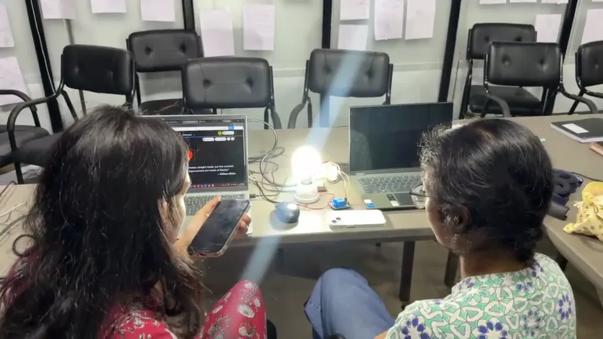
10. Testing Under Different Conditions
- ON and OFF commands: "Activate bulb ON" and "activate bulb OFF" each switched the bulb through IFTTT → Adafruit IO → ESP32, as shown in Video 3.1.
- Different phrasing: Google Assistant only triggers the applet when the exact scene name is spoken. Other wordings did not reach IFTTT, so the scene names have to be short and easy to say.
- Repeated commands: saying ON twice simply writes
1to the feed again. The firmware sets the relay to the requested state rather than toggling it, so a repeated command leaves the bulb in the same state. - Voice and dashboard together: the voice applets and the Adafruit IO toggle write to the same
relayfeed, so the bulb follows whichever was used last and the dashboard toggle stays in sync with the voice commands.
11. Problems & Solutions
Problem: the obvious approach would be to add voice handling to the ESP32 code, which means more firmware and re-flashing.
Solution: keep the Adafruit IO feed as the control layer and let IFTTT write to it. Because the Task 2 firmware already accepted ON/OFF, no firmware change was needed.
12. What I Learned About Cloud-Based Automation & Reflection
I learned that automation can be layered on top of an existing IoT system: the trigger layer (Google Assistant + IFTTT), the messaging layer (Adafruit IO) and the device layer (ESP32) are independent, so new triggers such as schedules or other services can be added without touching hardware. The trade-off is depending on several third-party clouds, which adds latency and more points of failure.
Firebase IoT Monitoring Dashboard
The ESP32 sends DHT11 temperature/humidity and LDR light readings to Firebase Realtime Database. A login-protected web dashboard on Firebase Hosting shows them live and controls the bulb relay.
Live Application
Tasks 4 and 5 are deployed on Firebase Hosting:
1. Objective
Build a cloud-connected monitoring system in which the ESP32 publishes sensor readings and reads control commands through Firebase. Only authenticated users can view the live data and switch the bulb from a web dashboard reachable anywhere.
2. Cloud Concepts
Cloud computing
On-demand access to computing resources (servers, storage, databases, networking, software) over the internet, paid for as used, instead of owning and maintaining physical hardware.
Service models
| Model | Provider manages | You manage | Example |
|---|---|---|---|
| IaaS — Infrastructure as a Service | Physical servers, storage, network | OS, runtime, app, data | AWS EC2, Google Compute Engine |
| PaaS — Platform as a Service | Infrastructure + OS + runtime | Application code and data | Google App Engine, Heroku |
| SaaS — Software as a Service | The entire application | Only your usage and data | Gmail, Google Docs |
| BaaS — Backend as a Service | Ready-made backend: database, auth, hosting, APIs | Front-end / device code | Firebase (used here) |
Cloud platform
A provider's collection of cloud services under one account and console, for example Google Cloud, which Firebase is part of. I used it to create the project, database, authentication and hosting together.
Database
An organised store of data that can be efficiently written, queried and updated, keeping the data consistent when many clients access it.
Firebase Realtime Database
A cloud-hosted NoSQL database that stores data as one JSON tree. Clients subscribe to a path and are pushed every change within milliseconds, so the ESP32 and the dashboard stay in sync without polling. My database is in asia-southeast1 (Singapore).
Cloud-based dashboard
A web interface hosted in the cloud that visualises device data and sends commands. It works from any browser, anywhere, rather than only on the local network as in Task 1.
Authentication, login systems & authorization
Authentication verifies who a user is (email/password or Google sign-in). A login system exists so only known users can see the home's data and switch its devices. Authorization decides what an authenticated user may do, for example reading /current or writing /control, which Firebase enforces with database security rules.
3. Firebase Project Setup
- Created the Firebase project SmartLightingIoT in the Firebase console.
- Registered a web app (SmartLightingDashboard) to get the web SDK config, and linked the Firebase Hosting site
smartlightingiot. - Created a Realtime Database in
asia-southeast1. - Installed the Firebase CLI, ran
firebase init hosting, and deployed withfirebase deploy --only hostingtohttps://smartlightingiot.web.app.
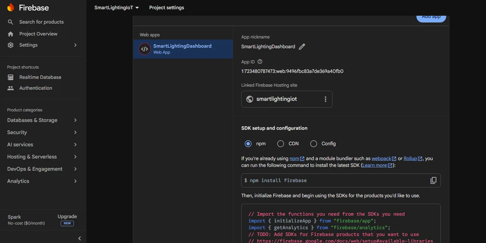
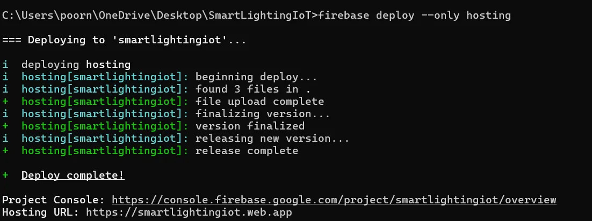
4. Firebase Authentication Configuration
- In Authentication → Sign-in method, enabled the Email/Password and Google providers.
- The login page uses the Firebase Auth SDK to sign in or create an account, and offers "Continue with Google".
- The ESP32 signs in as its own user (
UserAuth) so the database can require authentication for every read and write.
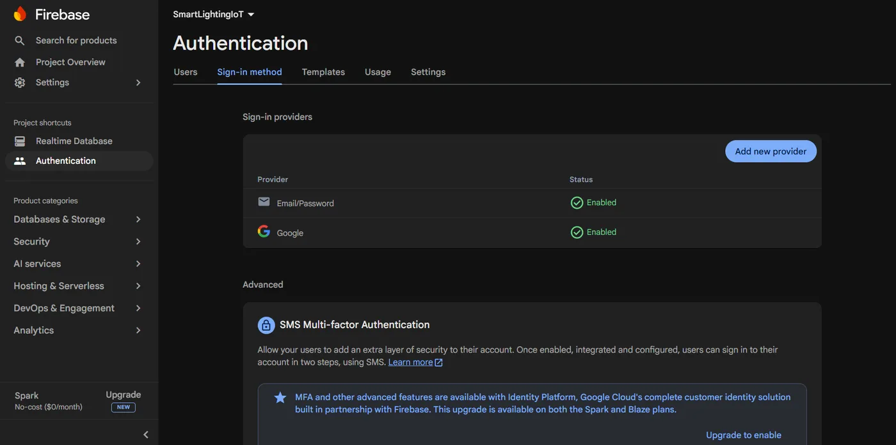
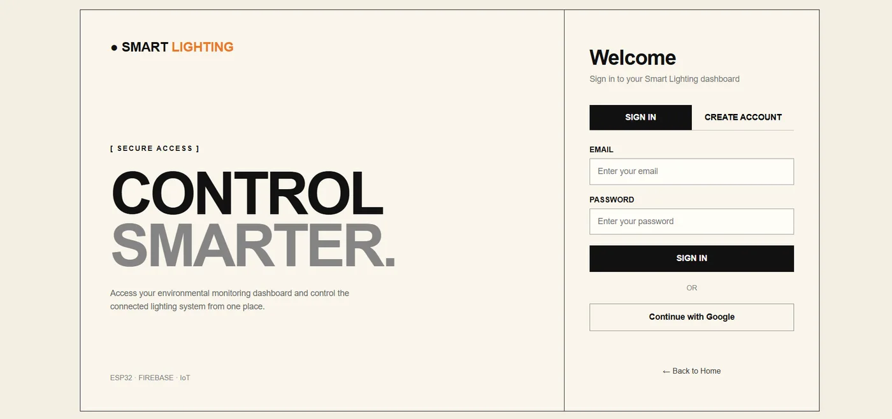
5. Realtime Database Structure
smartlightingiot-default-rtdb ├── control ← written by dashboard, read by ESP32 │ ├── bulbState: false │ ├── ldrThreshold: 2000 │ └── mode: "MANUAL" | "AUTOMATIC" ├── current ← written by ESP32 every 3 s, read by dashboard │ ├── bulbState: false │ ├── humidity: 48 │ ├── ldr: 2559 │ ├── mode: "MANUAL" │ └── temperature: 28.5 └── history ← Task 5 log (see below)
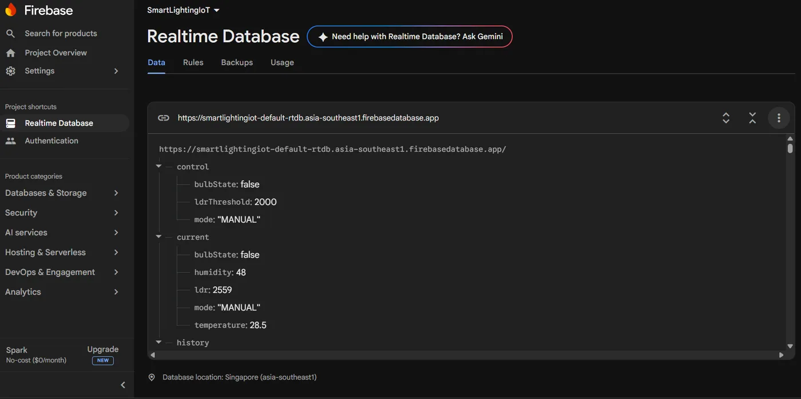
6. Database / Data-Flow Architecture
DHT11 (GPIO 4) ──┐
LDR (GPIO 34) ─┼──► ESP32 ──── HTTPS (FirebaseClient, UserAuth) ────┐
Relay (GPIO 26) ◄┘ │ │
│ writes /current (every 3 s) ▼
│ reads /control Firebase Realtime Database
│ ├── /current
│ └── /control
│ ▲
│ realtime listeners │ writes /control
└──────────────── Web dashboard (Firebase Hosting, Auth) ──┘
• live temperature / humidity / light / bulb
• MANUAL / AUTOMATIC mode, ON / OFF
• shows the current LDR threshold
Hardware & wiring
| Component | Connection | Role |
|---|---|---|
| ESP32 Dev Module | — | Wi-Fi controller and Firebase client |
| DHT11 | VCC 3.3 V · DATA → GPIO 4 · GND | Temperature and humidity |
| LDR module | VCC 3.3 V · AO → GPIO 34 · GND | Ambient light (ADC 0–4095) |
| Relay module | VCC 5 V · IN → GPIO 26 · GND | Active-low switching of the bulb |
7. Working Dashboard & Demonstration
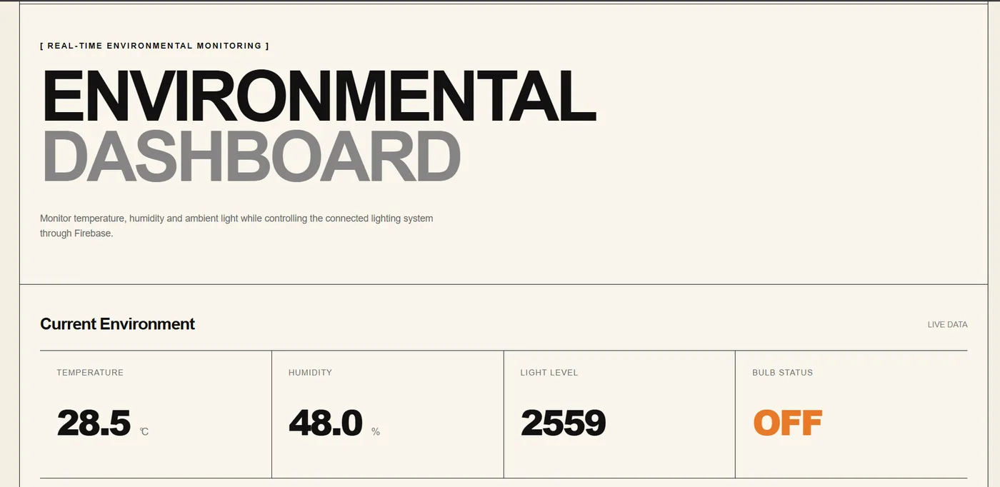
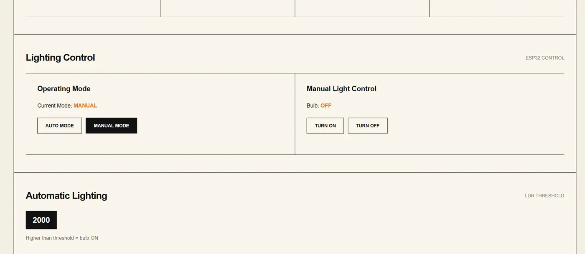
8. Complete Dashboard Source Code
The web app is three static pages deployed with Firebase Hosting to the smartlightingiot project. Each page is self-contained (inline CSS and JS). The login and dashboard pages load the Firebase v12 modular SDK from the CDN.
- landing.html: the "Smart Lighting" intro page that links to login.
- login.html: email/password sign-in and sign-up plus "Continue with Google" through Firebase Authentication.
- dashboard.html: realtime listeners on
/currentand/history, reads the threshold from/controland writes the mode and manual ON/OFF there, plus the Reading History table, the Chart.js history graph and the CSV download.
The Firebase web config keys are replaced with placeholders in these copies.
9. Problems Encountered & Solutions
Problem: the relay module is active-low, so the bulb turned ON when GPIO 26 was LOW and the dashboard state appeared inverted.
Solution: keep a logical bulbState everywhere and invert only at the pin: digitalWrite(RELAY_PIN, bulbState ? LOW : HIGH);. The relay is also set HIGH (off) in setup() so the bulb doesn't flash on at boot.
10. Reflection
Task 4 changed how I understood an IoT system. Instead of a browser talking directly to an ESP32, the cloud database became the shared communication layer: the ESP32 publishes state and reads commands, while the dashboard reads the same backend and writes commands. I also learned the difference between authentication and authorization, and how sensing, storage, presentation and actuation can be separated into layers.
Firebase Logging, Automation & Data Export
The complete smart-lighting system: live monitoring, manual and LDR-based automatic bulb control, timestamped history in Firebase, a sensor graph, and CSV download.
Live Dashboard
1. Objective of the Complete System
Turn the Task 4 dashboard into a complete smart-lighting system. It should monitor temperature, humidity and light; switch the bulb manually or automatically from the LDR; record every reading with a timestamp; and let the user review, graph and export that history.
2. Final System Architecture
DHT11 + LDR ──► ESP32 ──────────────────────────────┐
│ decide bulb state (MANUAL/AUTO) │
▼ │
Relay (GPIO 26, active-low) ──► bulb │
▼
Firebase Realtime Database
├── /current (overwrite every 3 s)
├── /control (mode, bulbState, ldrThreshold)
└── /history (push one record every 10 s)
│
▼
Web dashboard (Firebase Hosting + Auth)
├── live readings & bulb status
├── MANUAL / AUTO mode, ON / OFF
├── current LDR threshold (display only)
├── Reading History table
├── Sensor History Graph (Chart.js)
└── CSV download
3. Temperature, Humidity & Light Monitoring
The DHT11 on GPIO 4 provides temperature (°C) and relative humidity (%). The LDR module on GPIO 34 gives a 12-bit analog value (0–4095), which rises as the room gets darker with this module. The ESP32 reads all three every 3 s, skips the cycle if the DHT11 returns an invalid (NaN) reading, and updates /current, which the dashboard displays live.
4. Manual / Automatic Mode & Lighting Logic
- Manual mode: the dashboard's TURN ON / TURN OFF buttons write
/control/bulbState, and the ESP32 drives the relay to match. - Automatic mode: the ESP32 ignores the manual button and decides from the LDR reading.
- The selected mode is stored in
/control/mode(MANUAL/AUTOMATIC) and shown on the dashboard.
if (mode == "MANUAL") {
bulbState = manualBulbState; // from /control/bulbState
} else { // AUTOMATIC
bulbState = (ldr > ldrThreshold); // darker than threshold → ON
}
digitalWrite(RELAY_PIN, bulbState ? LOW : HIGH); // active-low relay
5. LDR Threshold & Calibration Method
The raw LDR value depends on the module's resistor and the room's lighting, so a fixed number can't suit every location. The threshold is stored in Firebase (/control/ldrThreshold, default 2000) and the dashboard displays the current value. The ESP32 re-reads it every 3 s, so changing the value in the Firebase console takes effect without re-flashing.
- Watch the live light level on the dashboard with normal room light.
- Cover or shade the LDR to simulate darkness and note the higher value.
- Set
/control/ldrThresholdin the Firebase console to a value between the two readings, so the bulb turns on when the room is dark and off when it is bright. The dashboard then shows the new threshold.
6. Historical Logging & Database Structure
Every 10 s the ESP32 push()es a new record under /history. Firebase generates a unique, time-ordered key, so records are appended rather than overwritten. Each record contains the timestamp (from NTP via configTime(), IST UTC+5:30), temperature, humidity, LDR value, bulb status and operating mode.
/history
└── -Nx9K2mLz8PqR_abc123 ← auto-generated push key
├── timestamp: "2026-09-26 18:50:07"
├── temperature: 28.5
├── humidity: 48
├── ldr: 2983
├── bulbState: false
└── mode: "MANUAL"
7. History on the Dashboard, Graph & CSV Export
The dashboard listens to /history and renders a Reading History table (timestamp, temperature, humidity, LDR, bulb, mode). A Sensor History Graph built with Chart.js plots temperature, humidity or light level, chosen from a dropdown. A CSV download button converts the records to comma-separated text, wraps them in a Blob and downloads it in the browser.
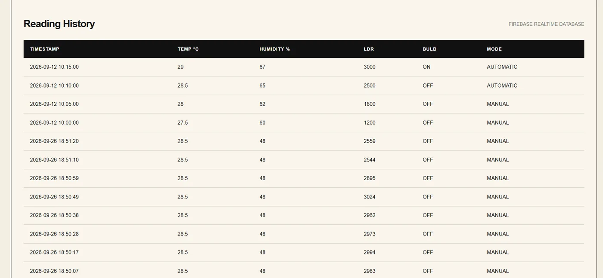
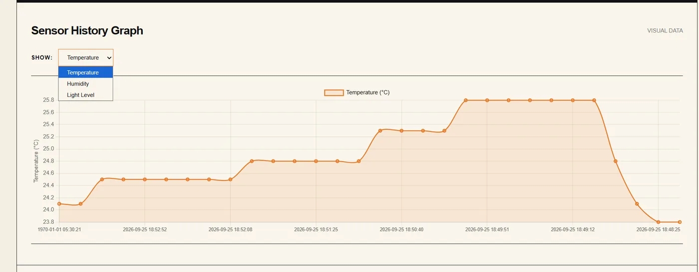
8. Firmware Source Code
This is the complete firmware that ran on the board, using the FirebaseClient library (Mobizt) with email/password user auth. It reads the sensors and /control every 3 s, writes /current, and pushes a /history record every 10 s. Credentials are replaced with placeholders.
Show full source — task5_esp32_firebase_logging.ino
/*
* TASK 04 & TASK 05: ESP32 Firebase IoT Monitoring & Logging
* Board: ESP32 Dev Module
* Sensors: DHT11 (GPIO 4), LDR Analog (GPIO 34)
* Actuator: Active-Low Relay (GPIO 26)
* Database: Firebase Realtime Database (project: smartlightingiot)
* Library: FirebaseClient by Mobizt (2.2.x)
* This is the firmware that ran on the board. Credentials have been
* replaced with placeholders for public release - fill them in before upload.
*/
#define ENABLE_USER_AUTH
#define ENABLE_DATABASE
#include <WiFi.h>
#include <WiFiClientSecure.h>
#include <FirebaseClient.h>
#include <DHT.h>
#include <time.h>
#define WIFI_SSID "YOUR_WIFI_SSID_HERE"
#define WIFI_PASSWORD "YOUR_WIFI_PASSWORD_HERE"
#define API_KEY "YOUR_FIREBASE_WEB_API_KEY"
#define DATABASE_URL "https://YOUR_PROJECT_ID-default-rtdb.REGION.firebasedatabase.app"
#define USER_EMAIL "user@example.com"
#define USER_PASSWORD "YOUR_USER_PASSWORD_HERE"
#define DHT_PIN 4
#define DHT_TYPE DHT11
#define LDR_PIN 34
#define RELAY_PIN 26
DHT dht(DHT_PIN, DHT_TYPE);
WiFiClientSecure ssl_client;
using AsyncClient = AsyncClientClass;
AsyncClient aClient(ssl_client);
UserAuth user_auth(
API_KEY,
USER_EMAIL,
USER_PASSWORD,
3000
);
FirebaseApp app;
RealtimeDatabase Database;
unsigned long lastSensorRead = 0;
unsigned long lastHistoryLog = 0;
const unsigned long SENSOR_INTERVAL = 3000;
const unsigned long HISTORY_INTERVAL = 10000;
float temperature = 0;
float humidity = 0;
int ldrValue = 0;
int ldrThreshold = 2000;
bool bulbState = false;
String currentMode = "MANUAL";
void setup() {
Serial.begin(115200);
delay(1000);
dht.begin();
pinMode(LDR_PIN, INPUT);
pinMode(RELAY_PIN, OUTPUT);
digitalWrite(RELAY_PIN, HIGH);
WiFi.begin(
WIFI_SSID,
WIFI_PASSWORD
);
Serial.print("Connecting to WiFi");
while (WiFi.status() != WL_CONNECTED) {
Serial.print(".");
delay(500);
}
Serial.println();
Serial.println("WiFi connected");
ssl_client.setInsecure();
initializeApp(
aClient,
app,
getAuth(user_auth)
);
app.getApp<RealtimeDatabase>(Database);
Database.url(DATABASE_URL);
configTime(
19800,
0,
"pool.ntp.org",
"time.nist.gov"
);
Serial.println("Firebase initialized");
}
void loop() {
app.loop();
if (!app.ready()) {
return;
}
unsigned long now = millis();
if (
now - lastSensorRead >=
SENSOR_INTERVAL
) {
lastSensorRead = now;
readSensors();
readControl();
updateCurrentData();
}
if (
now - lastHistoryLog >=
HISTORY_INTERVAL
) {
lastHistoryLog = now;
logHistory();
}
}
void readSensors() {
float newTemperature =
dht.readTemperature();
float newHumidity =
dht.readHumidity();
if (!isnan(newTemperature)) {
temperature =
newTemperature;
}
if (!isnan(newHumidity)) {
humidity =
newHumidity;
}
ldrValue =
analogRead(LDR_PIN);
Serial.println();
Serial.println("==============================");
Serial.print("Temperature : ");
Serial.print(temperature);
Serial.println(" C");
Serial.print("Humidity : ");
Serial.print(humidity);
Serial.println(" %");
Serial.print("LDR : ");
Serial.println(ldrValue);
Serial.print("Threshold : ");
Serial.println(ldrThreshold);
Serial.print("Mode : ");
Serial.println(currentMode);
Serial.print("Bulb : ");
Serial.println(
bulbState ? "ON" : "OFF"
);
Serial.println("==============================");
}
void readControl() {
String mode =
Database.get<String>(
aClient,
"/control/mode"
);
if (mode.length() > 0) {
currentMode =
mode;
currentMode.toUpperCase();
}
int threshold =
Database.get<int>(
aClient,
"/control/ldrThreshold"
);
if (threshold > 0) {
ldrThreshold =
threshold;
}
bool manualBulb =
Database.get<bool>(
aClient,
"/control/bulbState"
);
/*
MANUAL MODE
Dashboard directly controls bulb.
*/
if (currentMode == "MANUAL") {
bulbState =
manualBulb;
}
/*
AUTO MODE
Brightness:
LDR < threshold
→ bulb OFF
Darkness:
LDR > threshold
→ bulb ON
*/
else if (
currentMode == "AUTO" ||
currentMode == "AUTOMATIC"
) {
if (
ldrValue >
ldrThreshold
) {
bulbState = true;
} else {
bulbState = false;
}
}
updateRelay();
}
void updateRelay() {
/*
Active LOW relay:
LOW = relay ON
HIGH = relay OFF
*/
if (bulbState) {
digitalWrite(
RELAY_PIN,
LOW
);
} else {
digitalWrite(
RELAY_PIN,
HIGH
);
}
}
void updateCurrentData() {
Database.set<float>(
aClient,
"/current/temperature",
temperature
);
Database.set<float>(
aClient,
"/current/humidity",
humidity
);
Database.set<int>(
aClient,
"/current/ldr",
ldrValue
);
Database.set<bool>(
aClient,
"/current/bulbState",
bulbState
);
Database.set<String>(
aClient,
"/current/mode",
currentMode
);
}
String getTimestamp() {
struct tm timeinfo;
if (
!getLocalTime(
&timeinfo
)
) {
return "N/A";
}
char buffer[25];
strftime(
buffer,
sizeof(buffer),
"%Y-%m-%d %H:%M:%S",
&timeinfo
);
return String(buffer);
}
void logHistory() {
String timestamp =
getTimestamp();
String json = "{";
json +=
"\"temperature\":" +
String(temperature, 1) +
",";
json +=
"\"humidity\":" +
String(humidity, 1) +
",";
json +=
"\"ldr\":" +
String(ldrValue) +
",";
json +=
"\"bulbState\":" +
String(
bulbState ? "true" : "false"
) +
",";
json +=
"\"mode\":\"" +
currentMode +
"\",";
json +=
"\"timestamp\":\"" +
timestamp +
"\"";
json += "}";
String result =
Database.push<object_t>(
aClient,
"/history",
object_t(json)
);
if (
result.length() > 0
) {
Serial.print(
"History logged: "
);
Serial.println(result);
} else {
Serial.println(
"History logging failed"
);
Serial.println(
aClient.lastError().message()
);
}
}
9. Photos & Demonstration Video
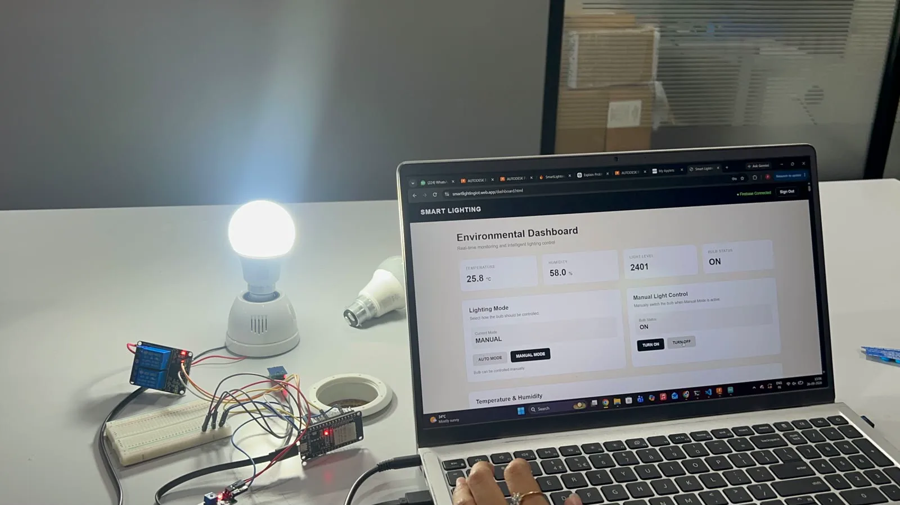
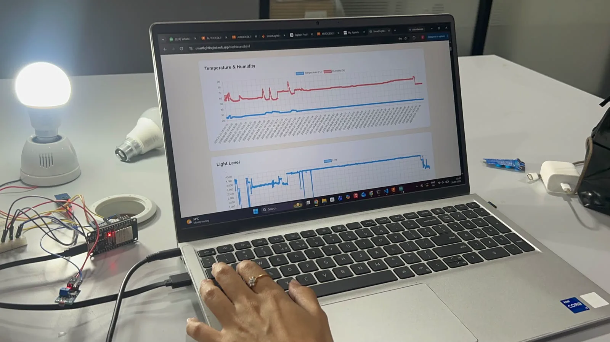
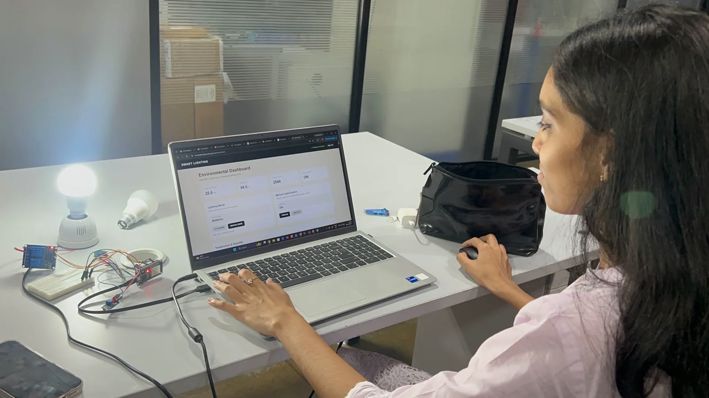
10. Problems Encountered & Solutions
LDR calibration: a fixed threshold behaved differently depending on room lighting. Fix: store the threshold in /control instead of hard-coding it. The ESP32 reads it from Firebase, so it can be recalibrated live from the Firebase console, and the dashboard shows the value in use.
Accurate timestamps: the ESP32 has no real-time clock. Fix: synchronise with pool.ntp.org using configTime() and stamp each record with local time.
11. Limitations of the Current Prototype
- Logging every 10 s grows
/historywithout limit. There is no automatic clean-up yet. - The DHT11 is a low-cost sensor with limited accuracy (about ±2 °C and ±5 % RH) and 1-unit resolution.
- The raw LDR value isn't calibrated to lux, and a single threshold can make the bulb flicker when the light level hovers around it.
- The ESP32 depends on Wi-Fi. Without a connection, readings are not stored and dashboard commands don't arrive.
- A breadboard prototype switching a mains bulb through a bare relay module is not an enclosed, safe product.
12. Possible Future Improvements
- A scheduled Cloud Function to delete or aggregate old history records.
- Hysteresis (separate ON and OFF thresholds) to stop flicker near the threshold.
- Buffering readings locally while offline and uploading them on reconnect.
- A DHT22 or BME280 for better accuracy, and a calibrated light sensor such as the BH1750.
- Push alerts for high temperature, and date-range filters for the graph and CSV export.
- Stricter per-user database security rules and an enclosed, fused relay board.
13. Final Learning Reflection
Task 5 brought the earlier assignments together into one IoT architecture. I learned that an IoT project is more than making a reading appear on a screen. The system has to acquire data, make control decisions, communicate with the cloud, keep historical state, present it clearly and give the user a usable control interface. Automatic mode also turned the system into a closed feedback loop. Across the five tasks I moved from a device that serves its own page on a LAN to a layered cloud system with authentication, storage and analytics.
14. Source Code & Project Files in Repository
- downloads/ folder on GitHub ↗: all firmware for Tasks 1–5.
- Web dashboard source (landing, login and dashboard pages): in the same
downloads/folder, described in Task 4, section 8.